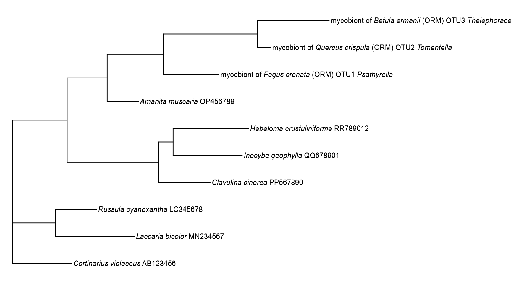
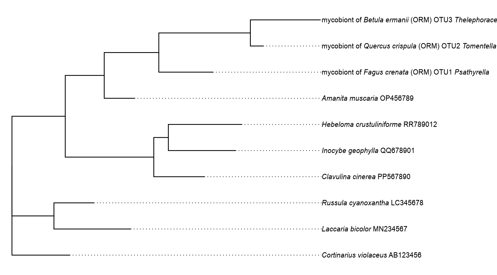
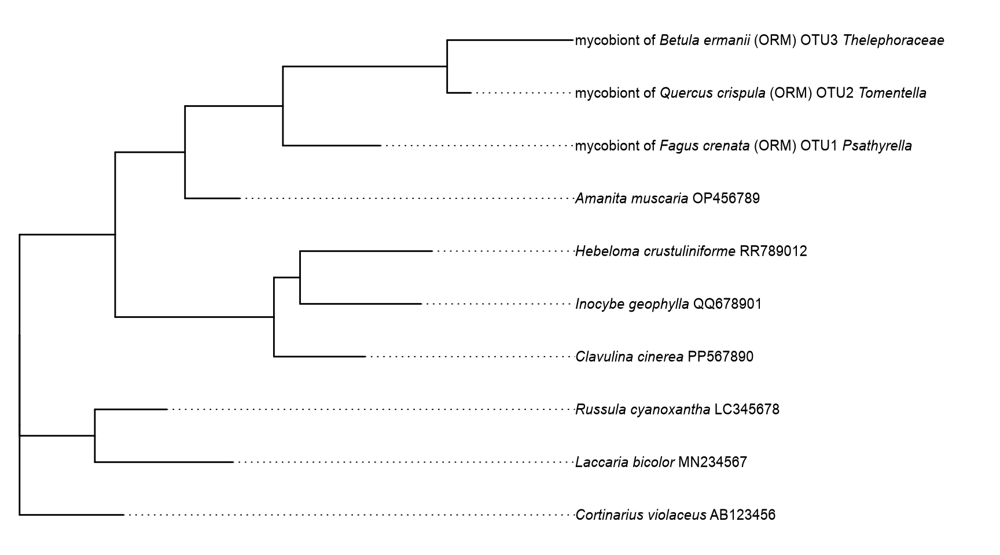
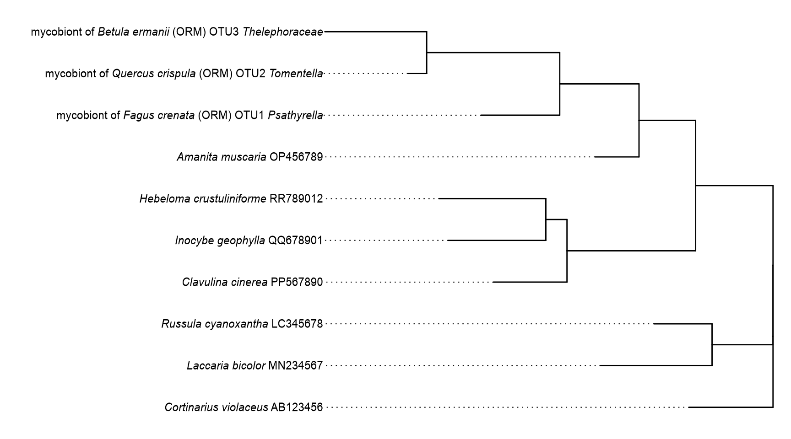

library(tidyverse)
library(ape)
library(ggtree)
library(marquee)
library(ggbipartite)学名付きの系統樹ラベルを整える
必要なパッケージ
この章で使う主な関数:
style_tree_label(): 学名ラベルを Markdown 形式で整形します。format_node_support(): node support 値を閾値で整形します。geom_tipmarquee(): tip ラベルをmarqueeで描画します。geom_nodemarquee(): node support ラベルをmarqueeで描画します。
このvignetteでは、学名付きラベルを読みやすく整形しつつ、ggtree で tip ラベルをきれいに配置する最小例を示します。学名部分はすべてダミーデータです。
marquee は、Markdown ベースの文字装飾を ggplot レイヤーで扱いやすくするパッケージです。ggbipartite では、ggtree::geom_tiplab() などを marquee ベースでスタイリングできるように、geom_tipmarquee() と geom_nodemarquee() を用意しています。
ダミー系統樹とラベルを用意する
set.seed(20260305)
# Include mixed label patterns so formatting rules can be validated in one dataset.
tree_raw <- rtree(10)
tree_raw$tip.label <- c(
"Cortinarius-violaceus_AB123456.1",
"Laccaria-bicolor_MN234567.1",
"Russula-cyanoxantha_LC345678.1",
"mycobiont_of_Fagus-crenata_ORM_OTU1_Psathyrella",
"mycobiont_of_Quercus-crispula_ORM_OTU2_Tomentella",
"mycobiont_of_Betula-ermanii_ORM_OTU3_Thelephoraceae",
"Amanita-muscaria_OP456789.1",
"Clavulina-cinerea_PP567890.1",
"Inocybe-geophylla_QQ678901.1",
"Hebeloma-crustuliniforme_RR789012.1"
)
support_pool <- c(
"98/100", "95/99", "92/97", "88/96", "84/95",
"79/90", "70/86", "66/82", "61/80"
)
tree_raw$node.label <- support_pool[seq_len(tree_raw$Nnode)]
tree_rooted <- root(
phy = tree_raw,
outgroup = tree_raw$tip.label[1],
resolve.root = TRUE
)学名とサポート値を整形する
tree_pretty <- tree_rooted
# Normalize raw labels first so italic parsing is stable and predictable.
tree_pretty$tip.label <- tree_rooted$tip.label |>
str_replace_all("_ORM_", "_(ORM)_") |>
str_remove("\\.1$") |>
style_tree_label(last_taxon_rank = "genus")
# Apply fixed support thresholds so node labels remain comparable across figures.
tree_pretty$node.label <- format_node_support(
x = tree_rooted$node.label,
sh_alrt_cutoff = 80,
boot_cutoff = 95
)
label_preview <- tibble(
raw_label = tree_rooted$tip.label,
styled_label = tree_pretty$tip.label
)
label_preview# A tibble: 10 × 2
raw_label styled_label
<chr> <chr>
1 Cortinarius-violaceus_AB123456.1 *Cortinarius* *violaceus…
2 Laccaria-bicolor_MN234567.1 *Laccaria* *bicolor* MN2…
3 Russula-cyanoxantha_LC345678.1 *Russula* *cyanoxantha* …
4 mycobiont_of_Fagus-crenata_ORM_OTU1_Psathyrella mycobiont of *Fagus* *cr…
5 mycobiont_of_Quercus-crispula_ORM_OTU2_Tomentella mycobiont of *Quercus* *…
6 mycobiont_of_Betula-ermanii_ORM_OTU3_Thelephoraceae mycobiont of *Betula* *e…
7 Amanita-muscaria_OP456789.1 *Amanita* *muscaria* OP4…
8 Clavulina-cinerea_PP567890.1 *Clavulina* *cinerea* PP…
9 Inocybe-geophylla_QQ678901.1 *Inocybe* *geophylla* QQ…
10 Hebeloma-crustuliniforme_RR789012.1 *Hebeloma* *crustulinifo…実務では、系統推定結果を phylo として読み込み、必要に応じて root を設定したうえで tibble に変換し、label 列を mutate() + case_when() で整形してから phylo に戻す流れが扱いやすいです。
mycobiont・サポート値・その他の学名を1か所で分岐できるため、可視化前の前処理を集約できます。
# Rerooting is context-specific; replacing this node keeps biological orientation correct.
tree_pretty_from_file <- read.tree("path/to/your_tree.treefile") |>
phytools::reroot(node.number = 31) |>
as_tibble() |>
mutate(
label = str_replace_all(
.data$label,
"_ORM_",
"(ORM)"
),
label = str_remove(.data$label, "\\.1$"),
label = case_when(
str_detect(.data$label, "mycobiont") ~
style_tree_label(.data$label),
str_detect(
.data$label,
"^\\d+(?:\\.\\d+)?/\\d+(?:\\.\\d+)?$"
) ~ .data$label,
.default = style_sciname(.data$label)
)
) |>
as.phylo()この方法では、ggtree() 側で整形済みラベルをそのまま使えるため、プロット層で文字列処理を書く必要が減り、図コードの可読性が上がります。
align = FALSE: tipごとにラベルを寄せる
base_tree <- ggtree(tree_pretty) +
scale_x_continuous(expand = expansion(mult = c(0.02, 0.55)))Warning: `aes_()` was deprecated in ggplot2 3.0.0.
ℹ Please use tidy evaluation idioms with `aes()`
ℹ The deprecated feature was likely used in the ggtree package.
Please report the issue at <https://github.com/YuLab-SMU/ggtree/issues>.Warning in fortify(data, ...): Arguments in `...` must be used.
✖ Problematic arguments:
• as.Date = as.Date
• yscale_mapping = yscale_mapping
• hang = hang
ℹ Did you misspell an argument name?p_unaligned <- base_tree +
geom_tipmarquee(
align = FALSE,
hjust = 0,
size = 3.2,
family = "Arial"
) +
geom_nodemarquee(
mapping = aes(label = label),
hjust = 1,
vjust = -0.4,
size = 2.6
) +
coord_cartesian(clip = "off")
p_unaligned
align = TRUE: 補助線を付けて整列する
p_aligned <- base_tree +
geom_tipmarquee(
align = TRUE,
hjust = 0,
linetype = "dotted",
linesize = 0.35,
size = 3.2,
family = "Arial"
) +
geom_nodemarquee(
mapping = aes(label = label),
hjust = 1,
vjust = -0.4,
size = 2.6
) +
coord_cartesian(clip = "off")
p_aligned
tip ラベルの見切れを防ぐ（expand = expansion(mult = ...)）
長い学名で tip ラベルが見切れる場合は、x 軸の expand を明示して余白を確保します。
必要に応じて coord_cartesian(clip = "off") も併用します。
base_tree_tight <- ggtree(tree_pretty)Warning in fortify(data, ...): Arguments in `...` must be used.
✖ Problematic arguments:
• as.Date = as.Date
• yscale_mapping = yscale_mapping
• hang = hang
ℹ Did you misspell an argument name?p_clipping_control <- base_tree_tight +
geom_tipmarquee(
align = TRUE,
hjust = 0,
linetype = "dotted",
linesize = 0.35,
size = 3.2,
family = "Arial"
) +
scale_x_continuous(expand = expansion(mult = c(0.02, 0.75))) +
coord_cartesian(clip = "off")
p_clipping_control
scale_x_reverse() で左右反転する
右側パネル用に系統樹を反転したい場合は、scale_x_reverse() を最後に追加します。
反転後は tip ラベルが左側へ出るため、hjust = 1 と expand = expansion(mult = c(..., ...)) の下限側調整が有効です。
p_reversed <- ggtree(tree_pretty) +
geom_tipmarquee(
align = TRUE,
hjust = 1,
linetype = "dotted",
linesize = 0.35,
size = 3.2,
family = "Arial"
) +
geom_nodemarquee(
mapping = aes(label = label),
hjust = 0,
vjust = -0.4,
size = 2.6
) +
coord_cartesian(clip = "off") +
scale_x_reverse(expand = expansion(mult = c(0.70, 0.02)))Warning in fortify(data, ...): Arguments in `...` must be used.
✖ Problematic arguments:
• as.Date = as.Date
• yscale_mapping = yscale_mapping
• hang = hang
ℹ Did you misspell an argument name?p_reversed
仕様解説
expand = expansion(mult = c(0.70, 0.02))
expansion(mult = ...)のmultは、データ範囲に対する相対余白です。- 長さ 2 の場合、
c(a, b)は軸の両端に別々の余白率を指定します。 c(0.70, 0.02)は「片側を大きく、反対側を小さく」余白確保する設定です。scale_x_reverse()では表示方向が反転するため、このvignetteではラベル側（左側）に広い余白を取り、反対側を最小限にしています。
format_node_support() の仕様
- 入力は node support の文字ベクトル
x。 - 2 値形式（例:
"SH/UFBoot"）では、sh_alrt_cutoffとboot_cutoffでそれぞれ判定します。 - 閾値未満の値は
missing_markへ置換され、両方が閾値未満なら空文字""になります。 - 1 値形式は
single_value = "ufboot"または"sh_alrt"で解釈できます。 keep_na = TRUEのときはNAを保持し、sig_digitsで表示桁数を制御します。
簡単な Markdown 解説:
- 文字列そのものを整形する関数で、強調記法は追加しません。
missing_markの置換結果をそのままラベルとして使えます。
support_example <- c("66.6/59", "90/94", "85/97", "55", "90", NA, "")
tibble(
input = support_example,
output_default = format_node_support(support_example),
output_as_sh = format_node_support(
support_example,
single_value = "sh_alrt"
)
)# A tibble: 7 × 3
input output_default output_as_sh
<chr> <chr> <chr>
1 "66.6/59" "" ""
2 "90/94" "90/—" "90/—"
3 "85/97" "85/97" "85/97"
4 "55" "" ""
5 "90" "" "90"
6 <NA> <NA> <NA>
7 "" "" "" style_tree_label() の仕様
- 入力は tree label の文字ベクトル
x。 - 学名に相当する部分は内部で
style_sciname()を使って整形します。 - 空文字と数値系ラベル（例:
"100","100/98"）はそのまま返します。 mycobiont_of_...形式にも対応し、末尾トークンの扱いはlast_taxon_rankで補助できます。last_taxon_rankは"genus"/"species"などを指定でき、NA_character_または""で無効化されます。
簡単な Markdown 解説:
- 学名部分に
*...*が付与され、Markdown italic として描画できます。 - 数値系ラベルは未変換なので、support 表示と混在させやすいです。
tree_label_example <- c(
"Coprinellus-aureogranulatus_GQ249274.1",
"mycobiont_of_Cremastra-aphylla_(ORM)_OTU1_Psathyrella",
"100/98"
)
tibble(
input = tree_label_example,
output_default = style_tree_label(tree_label_example),
output_genus = style_tree_label(
tree_label_example,
last_taxon_rank = "genus"
)
)# A tibble: 3 × 3
input output_default output_genus
<chr> <chr> <chr>
1 Coprinellus-aureogranulatus_GQ249274.1 *Coprinellus*… *Coprinellu…
2 mycobiont_of_Cremastra-aphylla_(ORM)_OTU1_Psathyr… mycobiont of … mycobiont o…
3 100/98 100/98 100/98 style_sciname() の仕様
- 入力は学名文字列ベクトル
x。 - 属・種などの学名部分を Markdown italic（
*...*）へ変換します。 cf.,aff.,nr.などの同定補助語、subsp.,var.,f.などの階級語を正規化します。×/xの交雑表記にも対応します。- 数値系ラベル（例: bootstrap 値）は未変換で返します。
簡単な Markdown 解説:
- 学名の主要部分だけに
*...*を付与し、補助語は通常テキストのまま残します。 geom_tipmarquee()/geom_nodemarquee()など Markdown 解釈する layer と相性が良いです。
sciname_example <- c(
"Cremastra aphylla",
"Cremastra cf. appendiculata",
"88"
)
tibble(
input = sciname_example,
output = style_sciname(sciname_example)
)# A tibble: 3 × 2
input output
<chr> <chr>
1 Cremastra aphylla *Cremastra* *aphylla*
2 Cremastra cf. appendiculata *Cremastra* cf. *appendiculata*
3 88 88 補足
- 系統推定時に
(ORM)のような括弧付き表記がプログラム側で_ORM_へ置換される場合があります。style_tree_label()の前にstr_replace_all()で_(ORM)_形式へ戻しておくと整形が安定します。 - support 値は
format_node_support()で閾値を固定しておくと、図間比較時の解釈がぶれにくくなります。 offsetを小さく調整すると、狭い図幅でもラベル同士の衝突を減らせます。- 見切れ対策は
scale_x_*()のexpand = expansion(mult = c(..., ...))を先に調整し、plot.marginに依存しない設定にしておくと再利用しやすくなります。 - 反転パネルでは
scale_x_reverse(expand = ...)とhjust = 1をセットで調整すると、ラベルの位置合わせが安定します。